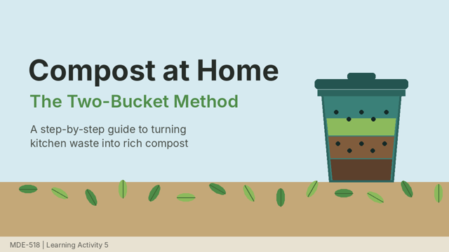

Welcome to the Certificate in Household and Community Waste Management
This 12-week course helps you separate, reduce and manage the waste of your home and your neighbourhood, and lead small changes in your colony, school or workplace. You can study on your phone, from the printed units, or at your study centre.
New in 2026: the Solid Waste Management Rules, 2026 came into force on 1 April 2026. Every household now keeps its waste in four streams.
WetDrySanitarySpecial care
Course at a glance
| Level and credits | Certificate, 4 credits (about 120 study hours) |
|---|---|
| Duration | 12 weeks, 8 to 10 hours a week |
| Medium | Hindi and English |
| Who can join | Anyone who has passed Class 12: RWA members, homemakers, SHG members, teachers, NSS volunteers and ULB staff |
| Media | Printed units, audio episodes, short videos, online quizzes, a WhatsApp study group, a monthly live class and study centre counselling |
| Assessment | Online quizzes, a compost log, one assignment and a field project with e-portfolio (40 per cent) |
Start here
Step 1. Listen to the first audio episode, Four Bins, One Habit (10 minutes).
Step 2. Look at the concept map to see how the four modules fit together.
Step 3. Read the module plan and note the dates of your quizzes.
Step 4. Watch Compost at Home before Module 2 begins.

Certificate in Household and Community Waste Management (CHCWM) | Course home page prepared for the MDE-518 Learning Portfolio (LA-6) | Banner, illustrations, music and sound effects are original work.